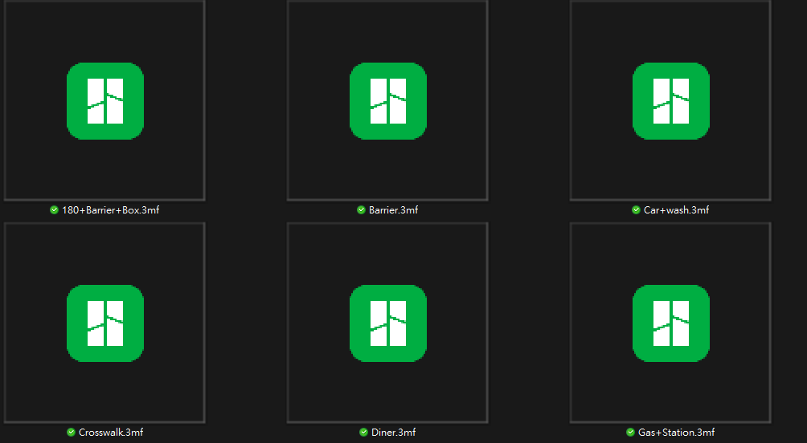
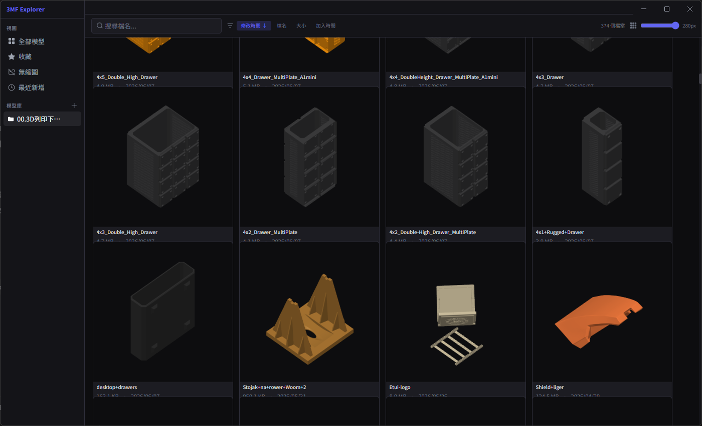

模型縮圖網格
直接顯示 3MF 內嵌預覽圖，可調整卡片尺寸，從總覽到細看都順手。
3MF Explorer 把 Windows 裡一排長得一模一樣的檔案，變成可以用眼睛辨認、搜尋、收藏與整理的本機模型圖庫。
我的 3MF 檔案散落在 OneDrive 資料夾裡。檔名像 Barrier.3mf、Diner.3mf、Gas+Station.3mf，Windows File Explorer 卻只顯示相同的綠色圖示。真正要找模型列印時，只能靠記憶、猜檔名，或一個一個打開。

「一堆玩具檔案名稱那樣，我要找一個模型來印製要找很久。」— 這個工具真正的需求規格
3MF 本質上是 ZIP 容器，許多切片軟體會把預覽圖放在裡面。3MF Explorer 讀取這些內嵌圖片、建立本機快取，再用適合大量瀏覽的卡片網格呈現。

它不想取代切片軟體，只處理一件很具體的事：讓你更快找到下一個要印的模型。
直接顯示 3MF 內嵌預覽圖，可調整卡片尺寸，從總覽到細看都順手。
搜尋檔名、作品名稱或作者；檔案有提供 metadata 時，還能查看授權、作品來源與作者頁面。
把常印、待印或特定專案的模型留下記號，建立自己的整理方式。
加入資料夾後立即建立索引；日後檔案有變動，仍可手動重新整理。
辨識尚未下載的雲端佔位檔，不把它誤判成損壞模型。
包含 AI 紫、竹青、熔岩、海洋與明亮模式；選擇會保留到下次啟動。
使用 Electron、React 與 TypeScript 建立介面；以 sql.js 保存模型庫、索引、收藏、標籤與筆記。
從 ZIP 內尋找 thumbnail、plate preview 或其他圖片；另外檢查 ZIP magic bytes，辨識 OneDrive 雲端佔位檔。
資料庫 374 筆全是 ok，374 張 PNG 也存在。最後定位到自訂圖片網址塞入完整 Windows 路徑，改成受控的 safe-file://thumbnail/<id> 後，縮圖全部正常。
修正 production 打包設定，搬移到可管理的專案位置，產出單一 Portable EXE，並用正式版實際啟動驗證。
新加入的模型庫不該再等使用者猜「下一步要按重新整理」。現在首次加入會自動掃描，重新整理則留給後續檔案變動。
v1.1 解析 3MF 內的作品名稱、作者、授權與來源網址；遇到 MakerWorld、Printables 等連結時，可從模型資訊面板安全地回到原作者頁面。
加入五套原創外觀主題與明亮模式，選擇保存在本機。視覺改變不影響模型資料與既有操作。
如果你也有一個塞滿 3MF、檔名愈來愈難記的資料夾，歡迎拿自己的收藏試試看。最有價值的回饋不是「好不好看」，而是它有沒有真的讓你更快找到模型。
程式在你的電腦上讀取 3MF、產生縮圖與索引，不需要上傳模型，也不需要註冊帳號。
Windows SmartScreen 可能跳出提醒。請確認檔名與下方 SHA-256；若你不習慣執行未簽章程式，可以先等待正式版本。
下載 ZIP、解壓縮後直接執行，不需安裝。第一次啟動會解壓縮執行環境，因此可能稍候數秒。